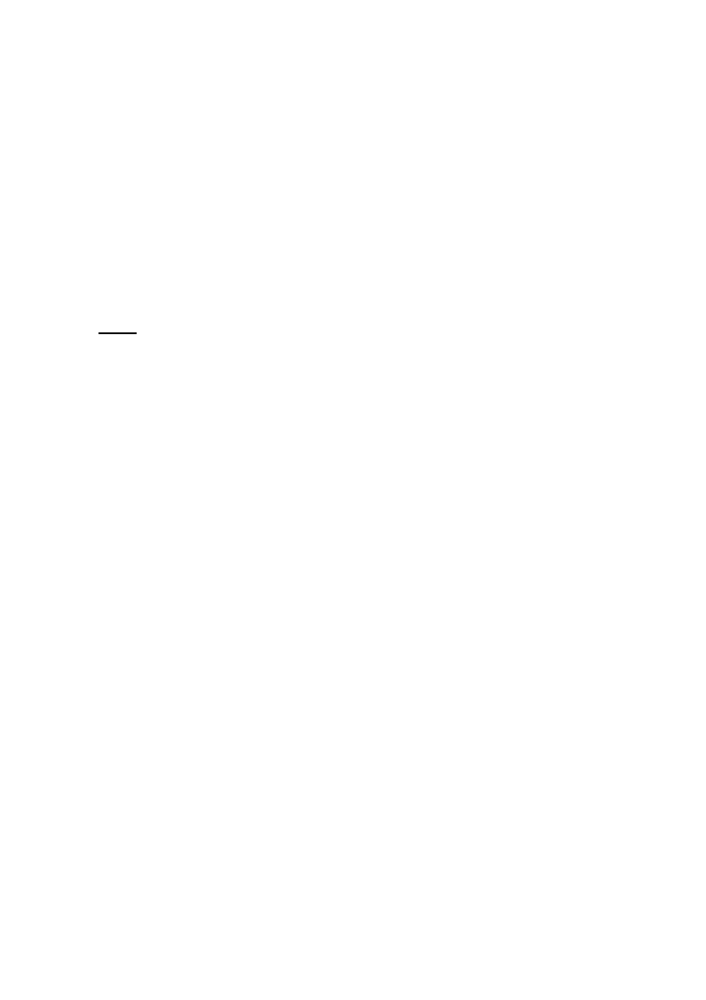

（三） 本會103年3月12日召開本案第一次專案小組會
議，委員及列席單位發言摘要與結論，103年7月
22日召開第二次專案小組會議紀錄，103年10月21
日召開第三次專案小組會議紀錄。
十二、 案經市府都市發展局103年11月27日檢送「修訂臺
北市信義計畫地區細部計畫（第三次通盤檢討）案」
修訂後計畫書、第三次專案小組審查意見回應表、
修正內容對照表、公民或團體陳情意見綜理表，提
請大會審議。
決議：
本案依第三次專案小組審查意見與綜整本次會議委員意
見決議如下：
一、 「廣告招牌規定」，同意依市府本次會議提送內容修正如
下：
（一） 各建築基地不得設置側懸型廣告物。
（二） 各建築基地不得設置屋頂樹立型廣告物。
（三） 本計畫區內如有以下情形之一者，不得設置閃爍式廣
告物及電子展示廣告物（含玻璃帷幕牆內）：
1、 建築基地屬住宅區者。
2、 建築物毗鄰（或隔道路毗鄰）住宅區該側。
3、 計畫區主要幹道及次要幹道交叉口。但經臺北市都市
設計及土地使用開發許可審議委員會審議通過者為例
外。
（四） 各類型廣告物高度以不超過各建築物離地30公尺為原
則；建築物高度未達30公尺者，以該建築物之高度為
原則。
（五） 透視膜廣告不得設置於非玻璃帷幕外牆上，並以設置1
處為原則。
（六） 本計畫區內「迴廊」、「廊道」得比照騎樓設置騎樓
簷下廣告招牌。
（七） 沿松高路、松智路、松仁路、信義路兩側及A15、A18、
A20、A22街廓須整體規劃設計，並經臺北市都市設計
17